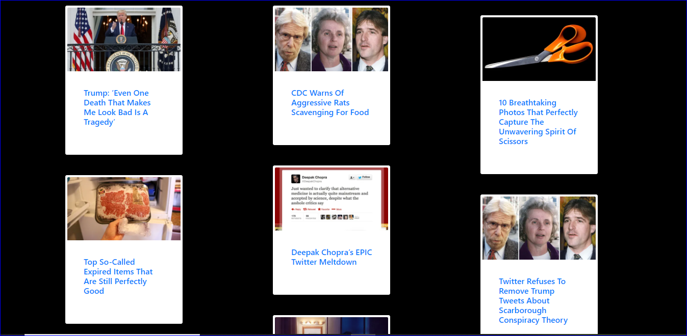

News Aggregator
Description
News aggregator is a Django project to scrape a news website using Beautiful soup and request module and hence combination of web crawlers and web applications. Both of these technologies have their implementation in Python.
Features
Our News aggregator works in 3-steps:
- 1.It scrapes the news website for the articles.In this Django project, we are scraping a website 'www.theonion.com'
(We have scraped news articles from 'latest' section of 'www.theonion.com' for demonstration)
- 2.Then it stores the article’s images, links, and title.
- 3.The stored objects in the database are served to the client. The client gets information in a nice template by clicking the 'Load news' button
Technologies:
- - Python
- - Django + Django REST Framework
- - React JS
- - Postgres
- - AWS (S3 & RDS)
- - Zingcharts - Trending & graphing test results
- - Google Maps API
- - XML2PDF - PDF generator
Tech Stack
- Python
- Beautiful Soup
- Django
- Sqlite3
- HTML,CSS
- CSS-Bootstrap